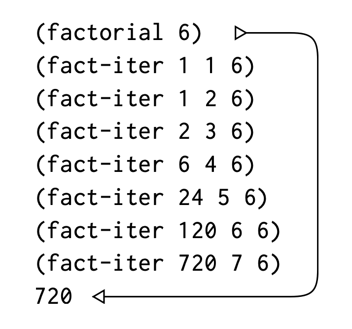

- Published on
SICP: Procedures and the Processes They Generate
- Authors
-
-

- Name
- nenjotsu
-
Table of Contents
번역서를 중점으로 보고 있습니다. 번역서에서 이해하기 어려운 말은 원서에서도 같이 참고하고 있습니다.
프로그래밍을 장기에 빗대서 표현하면 앞장에서는 어떻게 보면 장기 말이 무엇인지 어떻게 움직일 수 있는 건지에 대해서 배웠다.
장기에 대해서 알았다고 장기를 잘하는 것은 아니다. 우리는 장기를 두기 위해 전략과 전술을 펼쳐야 한다. 어떤 말을 움직이는 게 얼마 만큼의 가치가 있는지, 어떤 결과가 나올지 미리 예측을 하는 경험이 필요하다.
프로그램을 짜는 일도 마찬가지다. 우리가 무슨 이유로 무엇을 위해서 어떻게 만드는지 알아야 한다.
Procedure는 계산 과정이 그 내부에서 어떻게 단계별로 전개가 될지 정의하는 것이다.
Linear Recursion and Iteration
우선, factorial에 대해서 알아보자.
Factorial은 다음과 같이 정의할 수 있다.
n!= n·(n−1)·(n−2)···3·2·1
Factorial을 계산하는 방법은 많다. 그 중 하나는 n!은 n * (n-1)!을 이용하는 것이다.
n!= n·[(n−1)·(n−2)···3·2·1]= n·(n−1)!
따라서 우리는 이를 다음과 같은 procedure로 나타낼 수 있다.
(define (factorial n)
(if (= n 1)
1
(* n (factorial (- n 1)))))
이는 다음과 같이 동작할 수 있다.
우리가 앞서 소개한 recursive하게 자기 자신을 정의하면서 body에 그 procedure를 사용하고 있다. 이것을 보고 recursive하게 동작한다고 할 수 있다. recursive의 특징 중 하나는 위 동작처럼 자라나고 줄어드는 특징이 있다.
Factorial을 구하는 다른 방법을 알아보자.
n!은 1에 2를 곱한 값에 다시 3, 4를 차례로 곱하면서 n에 도달할 때까지 그 과정을 계속 되풀이하는 것이다.
지금까지 곱한 값을 product라 놓고 1부터 n까지 탐색하는 변수를 counter라고 두고, 그 단계를 지날 때마다 counter와 product를 아래 규칙에 따라 바꿀 수 있다.
product = counter \* product
counter = counter + 1
counter가 n에 도달할 때 결국 product 값은 n!이 될 수 있다. 이를 procedure로 표현하면 아래와 같다.
(define (factorial n)
(fact-iter 1 1 n))
(define (fact-iter product counter max-count)
(if (> counter max-count)
product
(fact-iter (* counter product)
(+ counter 1)
max-count)))
이는 다음처럼 동작한다.

이것은 iterative하게 동작한다고 할 수 있다. 즉, 반복하는 프로세스를 가졌는데 우리는 내부에 counter, max-count라는 state를 관리하는 변수를 줘서 조건을 따질 수 있다. recursive와는 다르게 자라나고 줄어드는 과정은 없다.
Tree Recursion
또 다른 흔하디 흔한 계산 방식 중 하나는 tree recursion이다.
예를 들어, 다음과 같이 피보나치 수열을 계산하는 걸 생각해보자.
0, 1, 1, 2, 3, 5, 8, 13, 21, …
일반적으로 피보나치 수열은 다음과 같이 정의할 수 있다.
우리는 바로 recursive procedure로 만들 수 있다.
(define (fib n)
(cond ((= n 0) 0)
((= n 1) 1)
(else (+ (fib (- n 1))
(fib (- n 2))))))
위 procedure대로 (fib 5)를 구하기 위해 실행하면 어떻게 되는지 살펴보자.

fib procedure의 정의대로 (fib 5)를 구하기 위해서는 (fib 4)와 (fib 3)를 구해야 하고, (fib 4)를 구하기 위해서는 (fib 3)와 (fib 2)를 구해야 한다. 위처럼 나뭇가지 혹은 뿌리처럼 갈래로 펼쳐진 꼴을 tree 구조라 한다.
fib procedure는 현재 단계마다 갈래가 2개씩 갈라져 나온다.
현재 피보나치 procedure는 (fib 5)를 구하기 위해 (fib 3), (fib 2), (fib 1), (fib 0)을 중복으로 호출하고 있다.
같은 값을 가지는 계산을 반복적으로 하기 때문에 위 방법은 사실 좋지 않은 방법이다.
다음처럼 피보나치 수열을 iterative 프로세스로 바꿀 수 있다.
정수 a, b가 있다고 하면, 첫 값은 차례로 Fib(1) = 1과 Fib(0) = 0으로 놓고, 되풀이할 때마다 아래 규칙에 따라 값을 바꿀 수 있다.
a = a + b
b = a
이를 반복하면 결국 a와 b가 Fib(n + 1), Fib(n)이 되는데 이 규칙을 다음과 같이 procedure로 작성해보자.
(define (fib n)
(fib-iter 1 0 n))
(define (fib-iter a b count)
(if (= count 0)
b
(fib-iter (+ a b) a (- count 1))))
위 방법은 linear recursive하게 Fib(n) 값을 구하는 방법이다. 아래와 같이 동작할 수 있다.
(fib 5)
>
(fib-tier 1 0 5)
(fib-iter 1 1 4)
(fib-iter 2 1 3)
(fib-iter 3 2 2)
(fib-iter 5 3 1)
(fib-iter 8 5 0)
>
5
여기서 본 tree recursion으로 이걸 쓸모 없다고 판단해서는 안된다. 여러 계층을 가진 구조화된 데이터를 다루는 프로세스에서는 또 잘 맞을 경우도 있기 때문이다.
물론, 앞서 만든 fib procedure의 경우 처음 만든 게 성능이 훨씬 떨어지지만 수학적인 정의를 그대로 옮긴 것처럼 그 정의를 쉽게 파악할 수 있는 장점 또한 있다.
Orders of Growth
앞서 나온 문제를 볼 때 어떤 계산 과정을 가지고냐에 따라 사용하는 resource의 크기가 달라진다. 이 차이를 비교하고 싶을 때 사용하는 간편한 방법 중 하나는 order of growth라는 개념을 사용하여 input의 크기에 따라 resource의 늘어나는 사용량을 측정할 수 있다.
어떤 문제의 크기를 나타내는 n이라는 변수가 있다고 하자. 그리고 R(n)은 크기가 n인 문제를 해결하는 데 필요한 자원의 양을 의미한다.
한 번에 고정된 수의 연산만 수행할 수 있는 컴퓨터에서는 실행 시간은 기본적인 연산 횟수에 비례한다.
우리는 R(n)의 증가 속도를 분석할 때 Θ(f(n)) 표기법(세타 표기법)을 사용한다.
R(n)=Θ(f(n))
결국, Θ(세타) 표기법은 어떤 함수의 성장 속도를 분석할 때 사용하는 개념이다.
만약 어떤 알고리즘이 입력 크기 n이 커질수록 대략 2n^2만큼 시간이 걸린다면, 우리는 R(n) = Θ(n^2) 라고 쓴다.
만약 실행 시간이 대략 5n + 10이라면 R(n) = Θ(n) 큰 수에서는 상수 10이 의미가 없고, 주된 성장 속도를 결정하는 것은 n이므로 이와 같이 표기할 수 있다.
한 마디로 입력 크기가 달라질 때 걸리는 시간의 패턴을 보는 것이다. 알고리즘을 평가하는 중요한 개념이므로 잘 알아두면 좋다.
앞서 살펴본 factorial의 두 케이스를 예로 들어보자.
Recursive하게 만든 procedure에서는 계산 단계가 n에 비례하여 늘어났다. 이 프로세스가 거쳐야 할 단계는 따라서 Θ(n)만큼 늘어나고, 계산에 필요한 기억 공간도 Θ(n)으로 늘어났다.
Iterative하게 만든 procedure의 경우, 그 계산 단계가 n에 비례하여 Θ(n)만큼 늘어난 건 동일하지만 필요한 기억 공간의 경우 Θ(1)로 고정적이다.
정리
- 재귀(Recursion): 문제를 작은 조각으로 나누고 반복 호출.
- 예:
(define (factorial n) (if (= n 1) 1 (* n (factorial (- n 1))))).
- 선형 재귀 vs 반복: 메모리를 쌓는 재귀 vs 꼬리 재귀(tail recursion)로 반복처럼.
- 예:
(define (fact-iter n acc) (if (= n 1) acc (fact-iter (- n 1) (* n acc)))).
- 트리 재귀: 여러 갈래로 뻗는 재귀(비효율적).
- 예:
(fib n) → (fib (- n 1)) + (fib (- n 2)).
- 복잡도: 시간(O(n))과 공간 사용 분석.
정의: 프로시저는 단순 호출을 넘어, 실행 과정(재귀, 반복)을 설계한다.